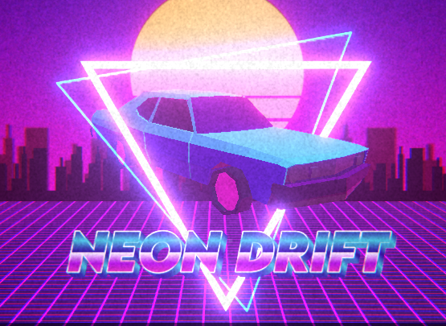
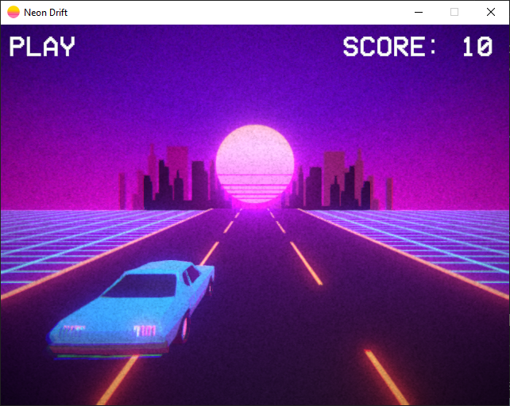
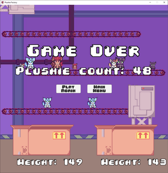

Computer Science Projects
Here you will find many of my projects relating to comp sci topics. For more in depth information check out my Github!
Hololens 2 Tello Drone SDK
This project implements the Tello SDK within Unity for the UWP platform.
Tools used
- Unity
- C#
- ffmpeg
- Hololens 2
- Tello drone + SDK
EEG VRChat Avatar Controller
This project is currently still in development
The goal of this project is to be able to control avatar parameters in VR from an EEG. An EEG measures electrical activity in the brain, while not very accurate or anywhere near mind control, it provides a cheap and basic entry point to prototype the idea of controlling aspects of VR with a brain computer interface.
The following items are used in this project:
- Valve Index
- Modified* Star Wars Force Trainer EEG
- Pi Pico
- VRChat's OSC system
Personal / Art Projects
VRChat Port: Lego StarWars II DS Bounty Hunter PvP minigame
A recreation of the buggiest lego starwars game's minigame, but in VR!
This project is currently in development...
Features
- Working Light Sabers that can deflect blaster bolts
- Force sensitivity
- Building
- Lego Models

Neon Drift
Vapor/Synth Wave themed game I made for the S&T Spring 2024 GameJam.
 Plushie Factory
A simple game I made for the S&T fall 2023 GameJam, it's very similar in nature to that one bob omb sorting mini game from the Mario DS games. You can check it out on my itch.io page.
